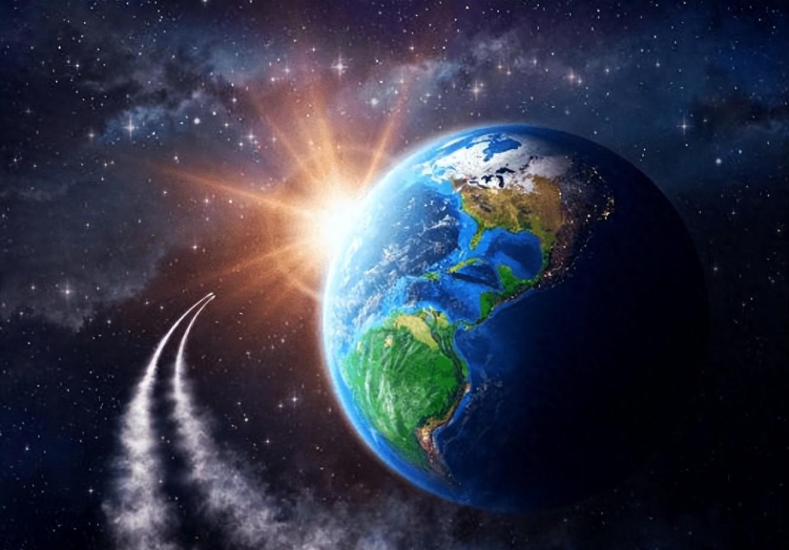

The Goldilocks Zone
Earth is the third planet from the Sun. It is the only planet we know of that has life on it. Because it sits in the "habitable zone," the temperature is right for liquid water to exist on the surface. Earth is not the biggest planet overall—it ranks fifth in size—but it is the largest of the four rocky planets near the Sun. It is just a bit bigger than Venus, and like Mercury and Mars, it is made of rock and metal.
Size, Distance, and Orbit
Earth measures about 7,926 miles (12,756 km) across at the equator. It orbits the Sun at an average distance of 93 million miles (150 million km), which is the distance scientists use as one Astronomical Unit (AU). Light from the Sun takes roughly eight minutes to reach us.
Our planet rotates once every 23.9 hours and takes 365.25 days to go around the Sun. Its axis is tilted at about 23.4 degrees, which is why we have different seasons throughout the year.
Atmosphere and Protection
The air around Earth is mostly nitrogen (78%) and oxygen (21%), with small amounts of argon, carbon dioxide, and neon. This atmosphere keeps the climate stable, creates the weather we experience every day, blocks harmful radiation from the Sun, and burns up most meteoroids before they can hit the ground.
Earth's Vital Signs
Click below to reveal key data about our home planet:
Select a stat to display...